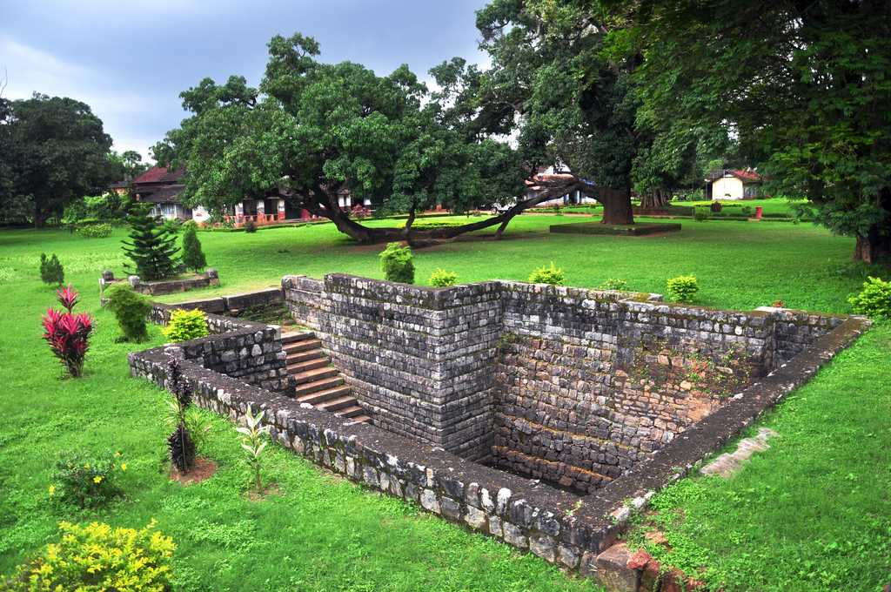
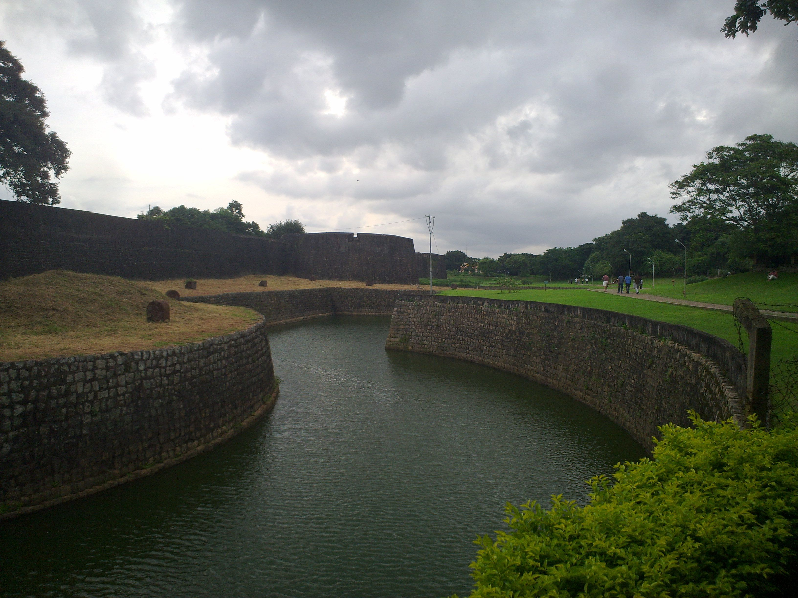
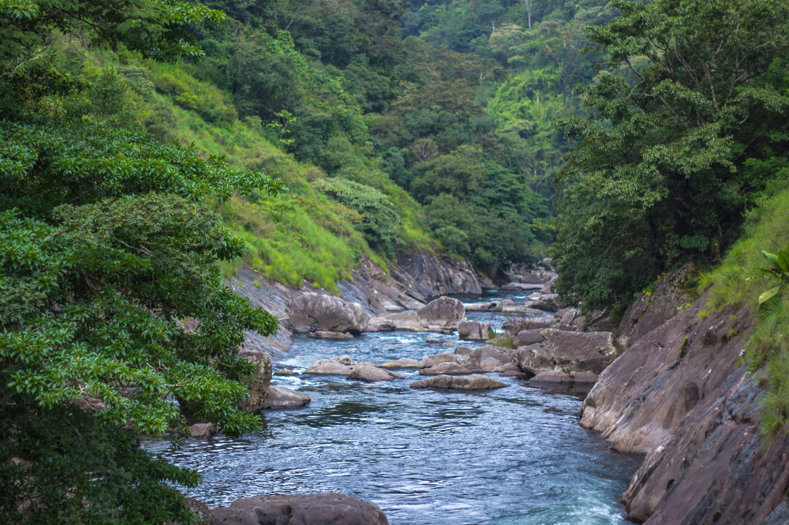
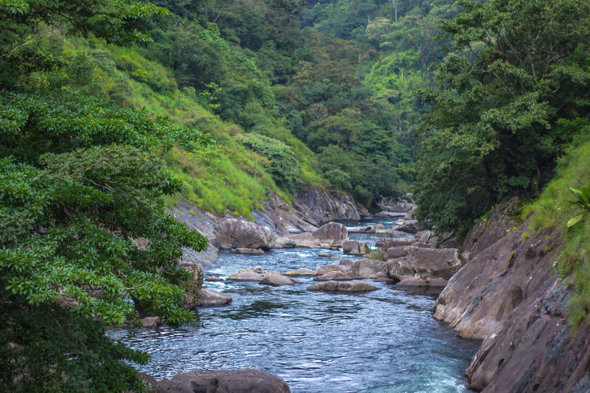
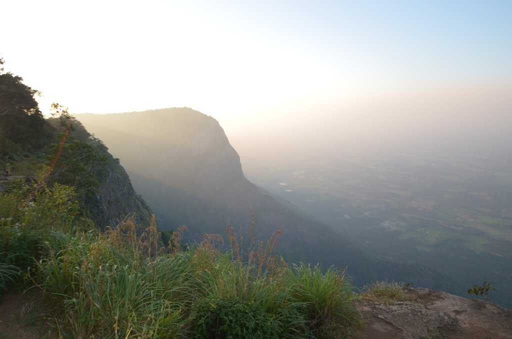
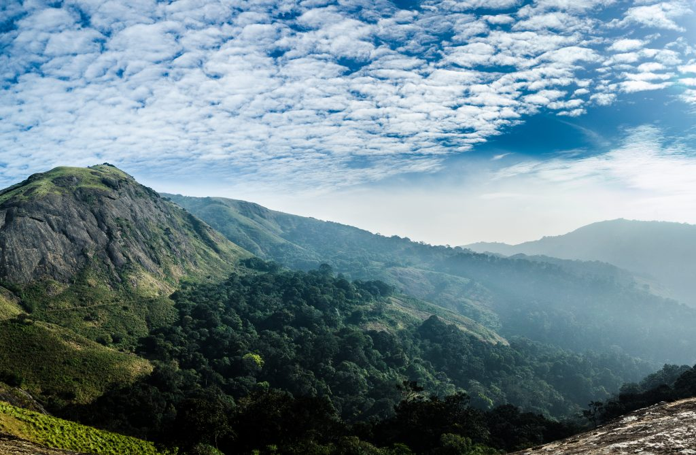

PALAKKAD - Gateway of Kerala
1. PALAKKAD FORT
  There is an 18th century military base in Palakkad that has many riveting stories to whisper. One of the best-preserved stone-built forts in Kerala, the Palakkad Fort which is often referred as the Tipu Sultan Fort, is one of the major attractions in Palakkad.
The story goes that Haider Ali rebuilt this medieval fort in 1766. In 1790, the British captured the fort and remodelled it in European style. The entry to this square-shaped fort is from the north east side, via a modern bridge. Once you enter, you face an L-shaped screen wall. It is believed that this construction was meant to safeguard the door from any direct attack. Bastions can be seen at each corner. Ample precautions were taken to protect the doorway from external attacks. A moat surrounds the fort.
At the main gate, you will see a stucco design, similar to what you will find in temples. In fact, in Kerala, these stucco designs are unique to the Palakkad Fort. A new age wooden doorway has replaced the old one. From the main doorway, you reach a second doorway that leads into the citadel. From the gate, the passage leads to a sub jail.

A walk along the fort will reveal unexpected wonders as you chance upon interesting ancient structures and designs. Another fascinating construction here is the ancient stone step well. A beautifully designed lawn enhances the appearance of the fort but the lawn is open to the public only in the mornings.
The fort is kept alive not only by the tourists but also by the staff of other governmental departments. The fort houses the offices of the Prison and Revenue departments on one side. Another structure houses a museum which displays sculptures and other artefacts found from the premises. For instance, plenty of temple ruins were obtained during a repair work held at the fort.
The fort is a protected monument under the Archaeological Survey of India.
2. SILENT VALLEY
 
 Located in the Northeast corner of Palakkad district, Silent Valley was named a National Park only in 1984. It was called 'Sairandhrivanam' as it was here that Sairandhiri (the secret identity donned by Panchali, from the epic Mahabharata) is believed to have hidden along with her five husbands, the Pandavas, while escaping their cruel cousins, the Kauravas. The Kunthippuzha River which feeds the entire forest was named after Kunthi, mother of the Pandavas. It is shielded by the Nilgiri Plateau to the North and the Mannarkkad Plains to the South. It constitutes the centrepiece of the Nilgiri Biosphere Reserve, an integral part of the Western Ghats, christened a World Heritage Site by UNESCO in 2012.
The flora and fauna found here makes one wonder if this ecosystem has survived since the very beginning of time. From tigers, leopards, elephants, snakes, Lion-Tailed Macaques and Malabar Giant Squirrels to moths, bugs and toads, the diversity in fauna is breath-taking. Along with them, one can view over 1,000 species of flowering plants and another 110 species of orchids that enchant all who see them. Over 400 species of moths and 200 species of butterflies have been catalogued here. The 128 species of beetles deserve a special mention since 10 of them were previously unknown to mankind.

Many have passed through here since then but none have been able to put to words the exact feelings or detail the emotions evoked by the experience these forests have to offer. It is something to be observed first-hand, this absolute gift of nature, with secrets that mankind is yet to truly understand.
In many ways and the park offers several eco-tourism packages for travellers like trekking and camping.
3. NELLIYAMPATHY
  After 23 hair pin bends comes the cloud caressed peaks of majestic Nelliyampathy hill at about 4600 feet above the sea level. Nelliyampathy is a tiny hill station from the town of Nenmara in Palakkad district. Nelliyampathy had its hills rich with coffee, tea and orange plantations.
The journey to Nelliyampathy itself is amazing with gooseberry trees on either side of the road and the cool refreshing air. As the journey continues one can see the flashes of the Pothundy Reservoir. If you look out the dense forest offers you the blissful sight of several animals like elephants, bison, Langur and deer.
One can also see Palakkad Gap, a geographical phenomenon in the western Ghats formation in this region. Nelliyampathy offers you some quality time in the lap of nature. You can trek in the hills, watch wildlife and can walk across the hilly roads enjoying the panoramic views around.Just before Nelliyampathy and after Nenmara in a picturesque landscape lies the Pothundy reservoir. With unmatched natural beauty and boating facilities this is an ideal picnic spot.
As walks towards the reservoir you can see the cool and serene water of the reservoir surrounded by the misty hills. It's a pleasure to watch water everywhere with the pristine beauty of nature. The Reservoir is fed by the Manchadi, Kalchandy and Challa tributaries of Bharathapuzha.
A distance of 8 km from Nelliyampathy is Seetharkundu where one can enjoy the view of stunning valleys with a waterfall adding charm to the place. This is believed to be the place where Sita devi rested on her journey back from Sri Lanka. A tall tree marks the spot today.Nelliyampathy have few peaks offering amazing views. Raja's Cliff at Mampara is one such breathtaking place. Situated at 5249 feet above Sea level Mampara is accessed by a forest path. This amazingly steep point is the best place to view the reservoir and other attractions around.
This peak offers you not only the view of Chaliyar, Meenkara and Aliyar dams but also a glimpse of Pollachi and Coimbatore in Tamilnadu. Near Mampara is the Victoria Church, located in the solitude atop a rock.